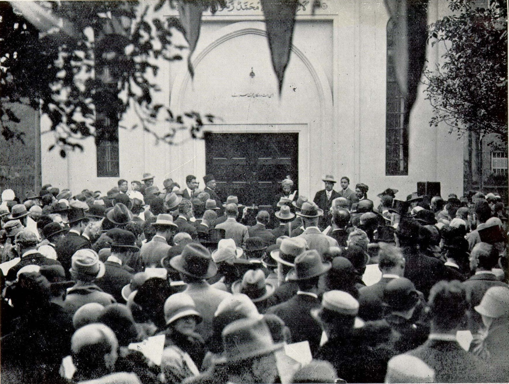
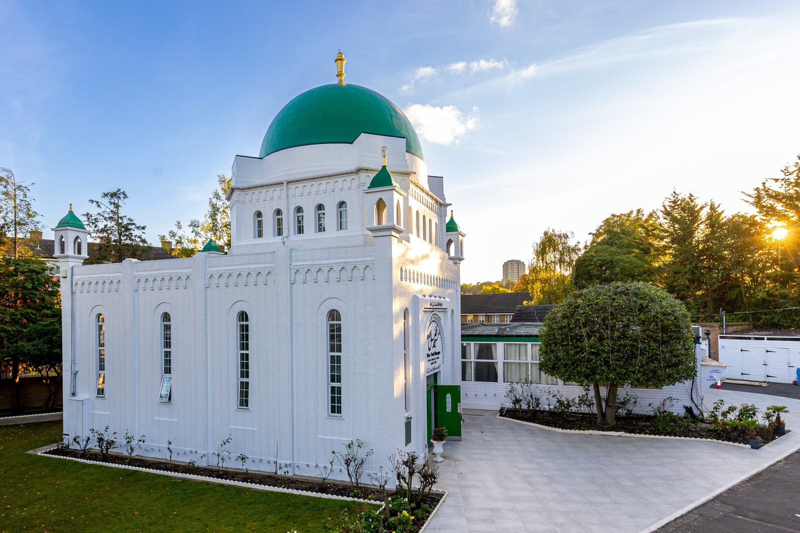
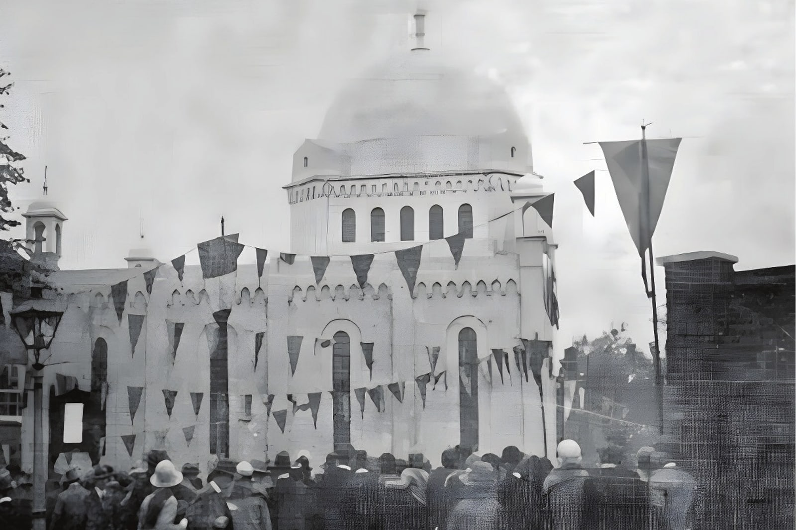
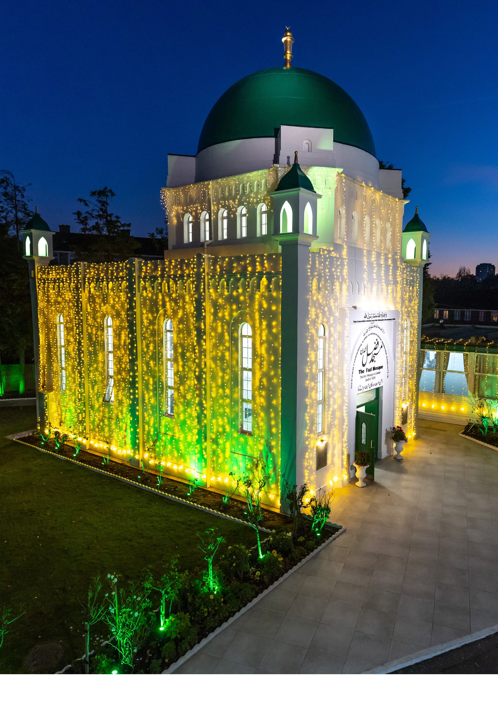
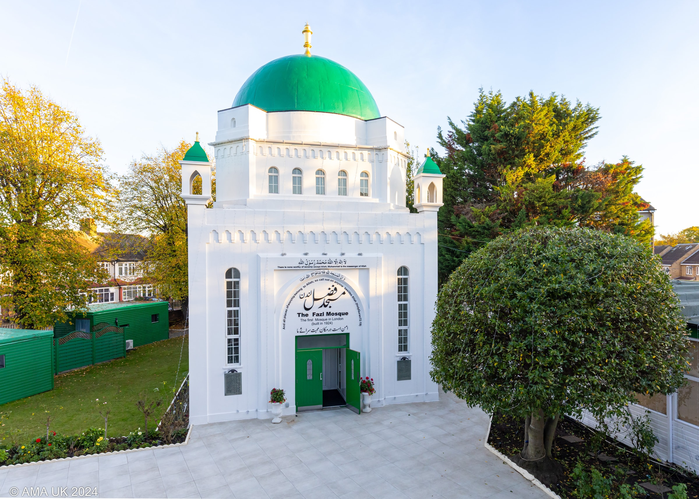

Fazl MosqueCentenary Reception
3 October 2026
London's first purpose-built mosque was completed and opened on 3 October 1926, paid for entirely by voluntary donations made by members of the Ahmadiyya Muslim Community. 2026 marks the Centenary of the inauguration of this historic mosque.
Register to AttendScroll to cross the century
The opening of the Fazl Mosque, 3 October 1926
London’s First Purpose-Built Mosque
Southfields, London, opened 3 October 1926
The Fazl Mosque was awarded heritage status by Historic England in 2018.
The same building, a hundred years apart
Then and now
Drag the handle to cross the century. The mosque stands on the same suburban street in Southfields and remains a vibrant a hub for the community to this day.


How it happened
A mosque funded mainly by the sacrifices of women
The mosque was paid for by the Ahmadiyya Muslim Community in India, people gave whatever they had. Women gave their jewellery, children gave their pocket money, men sacrificed their income and savings and almost none of them would ever see the mosque in person.
- 1889 The Community
- 1920 The Vision
- 1924 The Foundation Stone
- 1926 The Mosque Rises

“…may He [God] make it for ever and ever a centre for promulgating the views of purity, piety, justice and love, and may this place prove a sun of spiritual light radiating forth in this country and in all the countries…”
Hazrat Mirza Bashir-ud-Din Mahmud Ahmad, the Second Caliph of the Ahmadiyya Muslim Community, 19 October 1924
From the Archive
The Mosque over the years
Photographs and press cuttings held by the community, from the foundation stone to the guests who came to the Mosque in the years that followed. Select any image to enlarge it.
1 / 15
One Hundred Years On
The Fazl Mosque
Centenary Reception
In 2026 the Ahmadiyya Muslim Community UK marks one hundred years since the Fazl Mosque opened its doors, and it celebrates the centenary with gratitude to God and service to mankind.
PDF, 6 pages, 3.3 MB
